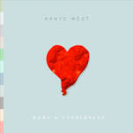

“Running from your problems is a race you’ll never win.” – Kid Cudi
Cudi's Path
1984 - Kid Cudi, the youngest of four children, is born Scott Ramon Seguro Mescudi in Cleveland, Ohio.
2008 - Cudi releases his first official full-length project: A Kid Named Cudi.
2008 - Cudi is signed to Kanye West's G.O.O.D muisic label after his debuet project caught West's attention.

2008 - Cudi is featured on Kanye West's 808s & Heartbreaks.
2009 - XXL names Cudi as a member of its 2009 Freshman Class.
2010 - The Man on the Moon is nominated for three Grammy Awards.
2012 - Following a series of unfullifled projects and a slew of features, Cudi relases his third major album, WZRD that garnered negative reviews from critics and fans alike.
2014 - Speedin' Bullet 2 Heaven, Cudi's sixth (and by far his worst) releases.